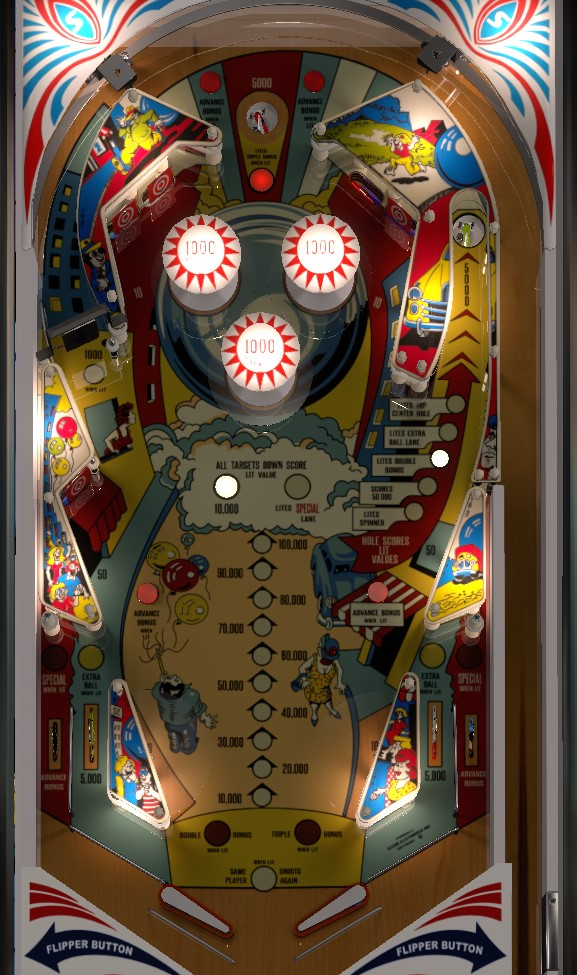

Not to be confused with Pinball Champ, Pinball Pool, Pro Pinball, or literally any other table with the word Pinball in it.
This game had both solid state and electromechanical versions. This guide was written with the solid state version in mind. Note that the EM version may have slightly different scoring or rules.
Find the right saucer shot from the left flipper and determine how to best get the ball under control from the saucer kickout. Shoot the saucer all day, especially if it is lit for 50,000 points, double bonus, or light top center hole.
Bonus is advanced on lit rollover buttons around the playfield that move whenever a 10 point switch is hit. Notice that each bonus advance is TEN thousand, as opposed to most games where it is 1,000 or 2,000.
Scores 5,000 points. Can be lit by an award at the right scoop, and falling in the scoop when lit immediately awards 3X bonus, even if 2X bonus had not been scored yet.
There are 5 on the table: 4 of them are in two pairs on either side of the bumpers, and the 5th is in the lower left of the table just below the spinner. Each completion of all 5 drops on the table scores 10,000 points.
Two completions of the drops in a single ball lights Special on the out lanes, and can also award a replay directly based on settings. The Special can either be light solidly on both out lanes, or on just one out lane alternately. In competition play, the Special scores 100,000 points, which is nothing to sneeze at on its own, but there are more reliable ways to score 100,000 in this game that don't involve intentionally trying to lose a ball in a particular way.
The spinner is worth 100 points per spin when not lit, or 1,000 points per spin when lit. The only way to light the spinner is from the light spinner award at the right hole. Even when lit, the spinner's points aren't great; this lane is really just a way to get back to the top of the table if the top saucer is lit for triple bonus.
There are 4 on the table: two in the very top of the table, above and on either side of the top saucer, and two are in the lower middle of the table, in front of the lower left drop target and the shot to the right hole. Lit rollover buttons advance the bonus. Each bonus advance is worth 10,000 points in this game, in contrast to other tables where each bonus advance is 1 or 2 thousand, so definitely go for these when it's safe to.
Under some settings, all 4 buttons will always be lit, but under other settings, only some of the buttons will be lit and the lights will rotate for each 10-point switch hit anywhere in the game.
Max base bonus is 100,000 points: the bonus ladder cannot be filled a second time like in some other games of this era.
By far the most valuable feature in the game. The hole itself scores 5,000 points plus whatever other award is lit. There are 5 awards, and which one is lit rotates every time a 10-point switch is triggered:
The most consistent strategy for points involves getting the right saucer lit for Scores 50,000 and then just whacking the ball up that lane repeatedly. Be sure to figure out how best to control the ball from the right saucer kickout and also how to pass the ball from right to left to set up another saucer shot. 55,000 points per shot on a very repeatable shot is unparalleled when it comes to scoring in this game.